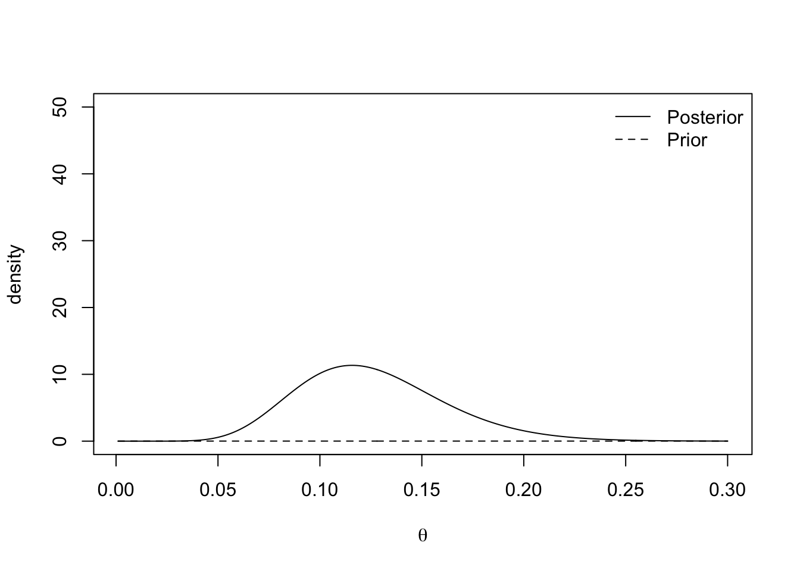
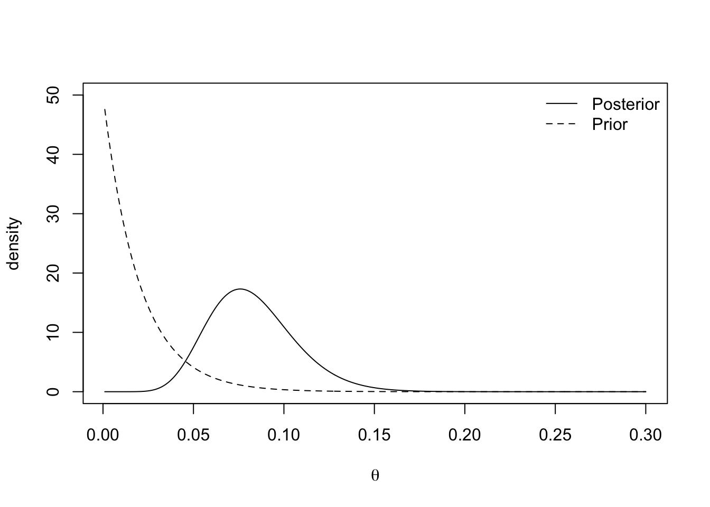
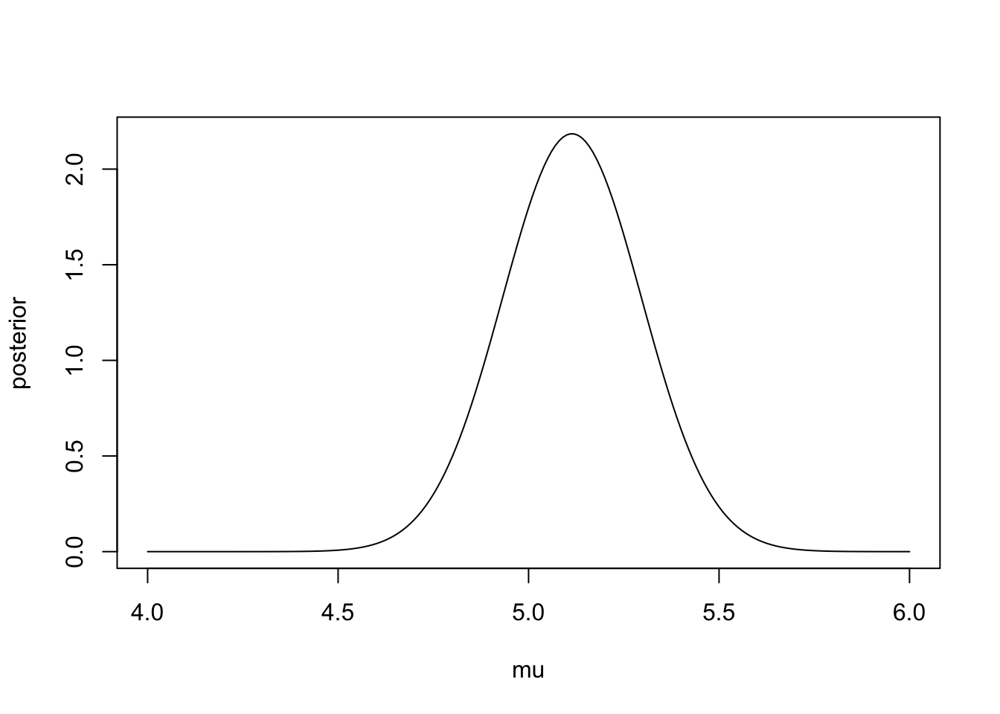
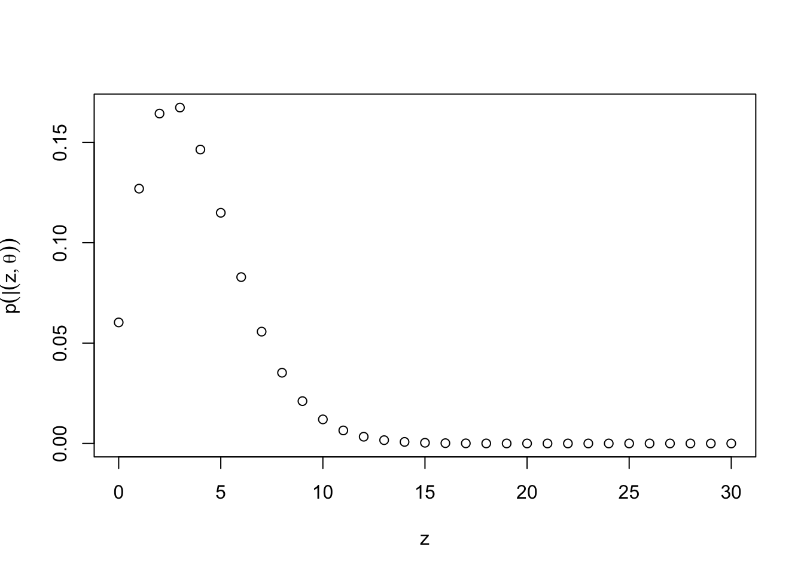
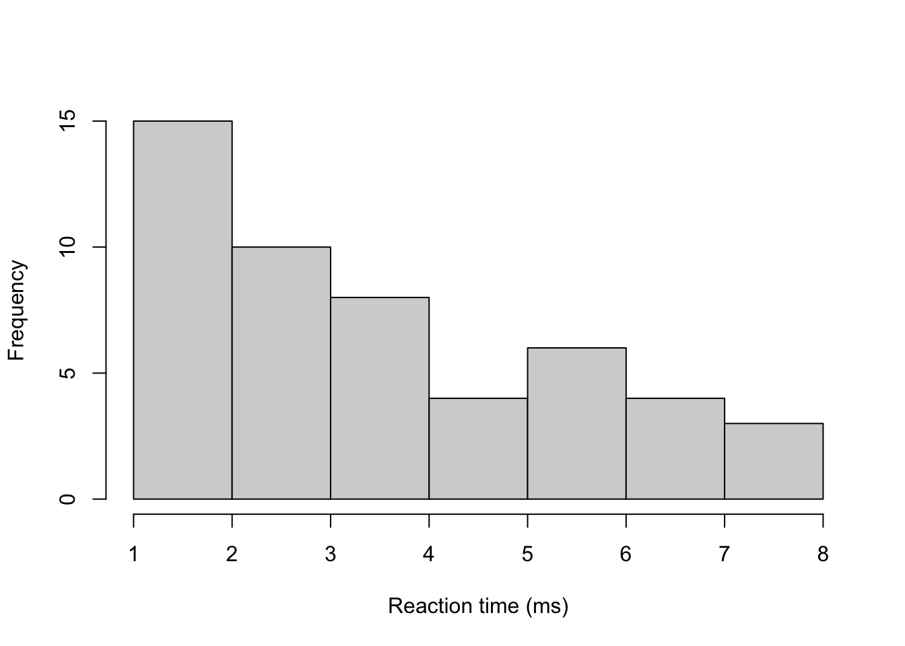
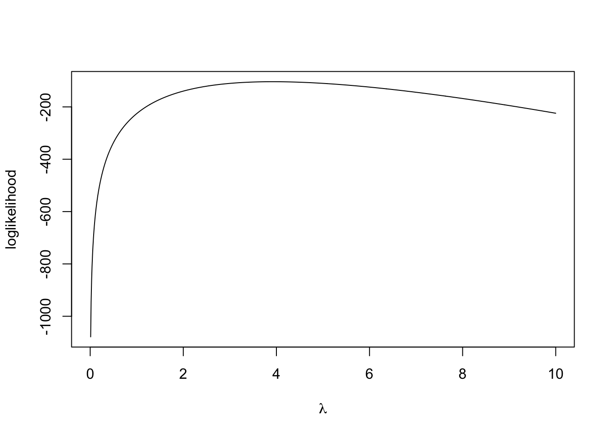
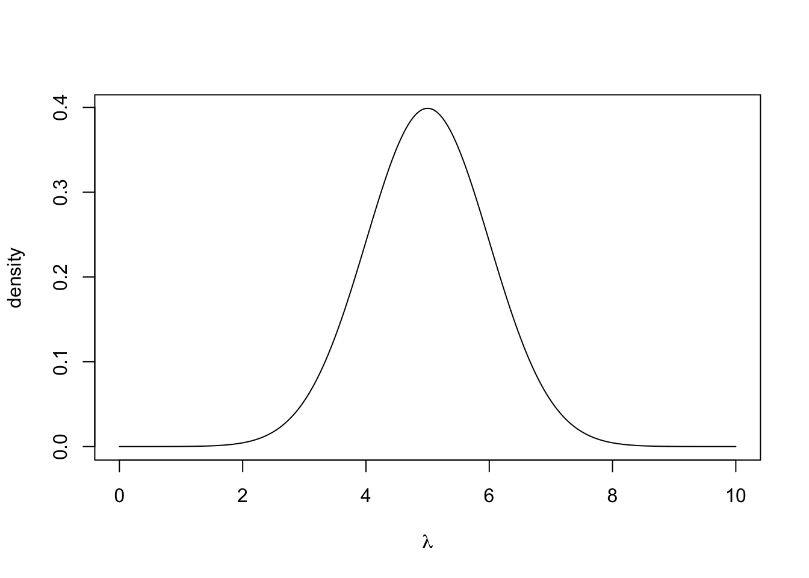
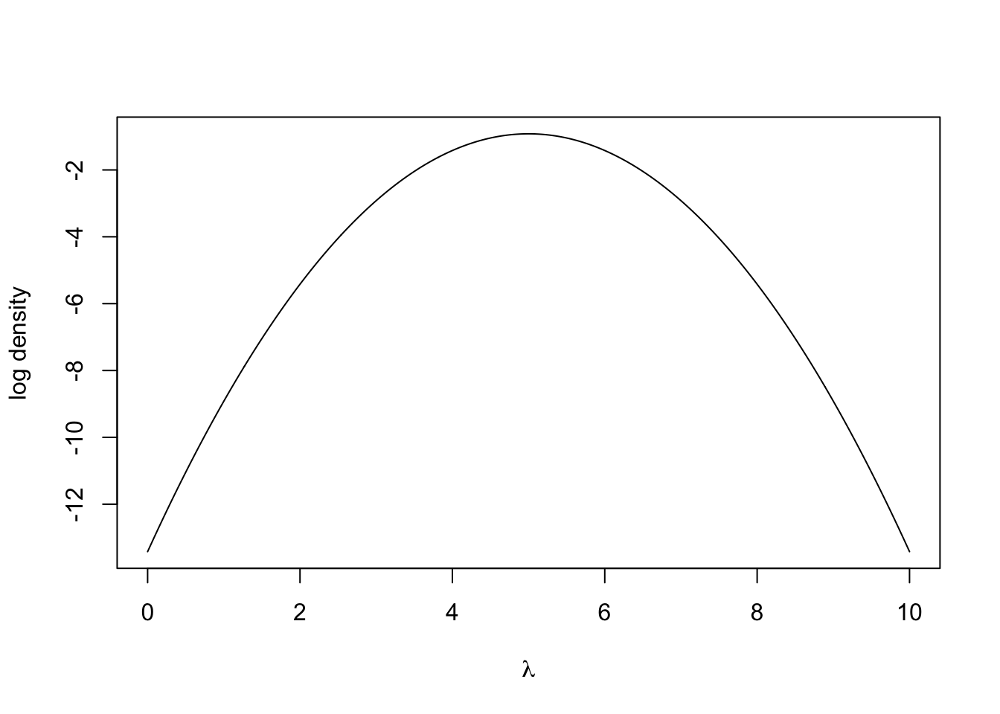

Chapter 3 Bayesian Inference
Whereas Chapter 1 dealt with the fundamentals of Bayesian inference and definitions, Chapter 3 is much more practical. We are going to be deriving posterior distributions and proving when it does and doesn’t work.
3.1 The Binomial Distribution
The first example we are going to go through is with the Binomial distribution.
Example 3.1 A social media company wants to determine how many of its users are bots. A software engineer collects a random sample of 200 accounts and finds that three are bots. She uses a Bayesian method to estimate the probability of an account being a bot. She labels the accounts with a 1 if they are a bot and 0 if there is are a real person. The set of account labels is given by \(\boldsymbol{y} = \{y_1, \ldots, y_{200}\}\) and the probability an account is a bot is \(\theta\). By Bayes’ theorem, we obtain the following, \[ \pi(\theta \mid \boldsymbol{y}) \propto \pi(\boldsymbol{y}\mid \theta) \pi(\theta). \]
Likelihood function \(\pi(\boldsymbol{y}\mid \theta)\). We observe 200 trials each with the same probability of success (denoted by \(\theta\)) and probability of failure (given by \(1-\theta\)). The Binomial distribution seems the most suitable way of modelling this. Therefore, the likelihood function is given by, \[ \pi(\boldsymbol{y}\mid \theta) = \begin{pmatrix} 200 \\ 3 \end{pmatrix} \theta^3(1-\theta)^{197}, \] assuming that any two accounts being a bot are independent of one another.
Prior distribution \(\pi(\theta)\). We now need to describe our prior beliefs about \(\theta\). We have no reason to suggest \(\theta\) takes any specific value, so we use a uniform prior distribution \(\theta \sim U[0, 1]\), where \(\pi(\theta) = 1\) for \(\theta \in [0, 1]\).
Posterior distribution \(\pi(\theta \mid \boldsymbol{y})\). We can now derive the posterior distribution up to proportionality \[ \pi(\theta \mid \boldsymbol{y}) \propto \theta^3(1-\theta)^{197}. \] This functional dependence on \(\theta\) identifies the \(\pi(\theta \mid \boldsymbol{y})\) is a Beta distribution. The PDF for the beta distribution with shape parameters \(\alpha\) and \(\beta\) is \[ \pi(x \mid \alpha, \beta) = \frac{\Gamma(\alpha + \beta)}{\Gamma(\alpha)\Gamma(\beta)}x^{\alpha - 1}(1-x)^{\beta - 1}. \] The posterior distribution is therefore \(\theta \mid \boldsymbol{y} \sim \textrm{Beta}(4, 198)\).
3.2 Reporting Conclsuions from Bayesian Inference
In the previous example, we derived the posterior distribution \(\theta \mid \boldsymbol{y} \sim \textrm{Beta}(4, 198)\). But often, we want to share more descriptive information about our beliefs given the observed data. In this example, the posterior mean given the data is \(\frac{4}{198} = \frac{2}{99}\). That is to say given the data, we expect that for every 99 accounts, two to be bots. The posterior mode for \(\theta\) is \(\frac{3}{200}\) or 1.5%.
It is important to share the uncertainty about out beliefs. In a frequentist framework, this would be via a confidence interval. The Bayesian analogues is a credible interval.
Definition 3.1 A credible interval is a central interval of posterior probability which corresponds, in the case of a 100\((1-\alpha)\)% interval, to the range of values that capture 100\((1-\alpha)\)% of the posterior probability.
Example 3.2 The 95% credible interval for the Binomial example is given by
## [1] 0.005 0.043This says that we believe there is a 95% chance that the probability of an account being a bot lies between 0.005 and 0.043. This is a much more intuitive definition to the confidence interval, which says if we ran the experiment an infinite number of times and computed an infinite number of confidence intervals, 95% of them would contain the true value of \(\theta\).
3.3 The Exponential Distribution
Example 3.3 An insurance company want to estimate the time until a claim is made on a specific policy. They describe the rate at which claims come in by \(\lambda\). The company provides a sample of 10 months at which a claim was made \(\boldsymbol{y} = \{14, 10, 6, 7, 13, 9, 12, 7, 9, 8\}\). By Bayes’ theorem, the posterior distribution for \(\lambda\) is \[ \pi(\lambda \mid \boldsymbol{y}) \propto \pi(\boldsymbol{y} \mid \lambda) \pi(\lambda). \]
Likelihood function \(\pi(\boldsymbol{y} \mid \lambda)\). The exponential distribution is a good way of modelling lifetimes or the length of time until an event happens. Assuming all the claims are independent of one another, the likelihood function is given by \[\begin{align*} \pi(\boldsymbol{y} \mid \lambda) &= \prod_{i=1}^{10} \lambda e^{-\lambda y_i} \\ & = \lambda^{10}e^{-\lambda \sum_{i=1}^{10} y_i} \\ & = \lambda^{10} e^{-95\lambda}. \end{align*}\]
Prior distribution \(\pi(\lambda)\). As we are modelling a rate parameter, we know it must be positive and continuous. We decide to use an exponential prior distribution for \(\lambda\), but leave the choice of the rate parameter up to the insurance professionals at the insurance company. The prior distribution is given by \(\lambda \sim \textrm{Exp}(\gamma).\)
Posterior distribution \(\pi(\lambda \mid \boldsymbol{y})\). We now have all the ingredients to derive the posterior distribution. It is given by \[\begin{align*} \pi(\lambda \mid \boldsymbol{y}) &\propto \lambda^{10} e^{-95\lambda} \times e^{-\gamma\lambda} \\ & \propto \lambda^{10}e^{-(95 + \gamma)\lambda} \end{align*}\] The functional form tells us that the posterior distribution is a Gamma distribution. The PDF of a gamma random variable with shape \(\alpha\) and rate \(\beta\) is \[ \pi(x \mid \alpha, \beta) = \frac{\alpha^\beta}{\Gamma(\alpha)}x^{\alpha-1}e^{-\beta x}. \] The distribution of the rate of the claims given the observed data is \(\lambda \mid \boldsymbol{y} \sim \textrm{Gamma}(11, 95 + \gamma)\).
The posterior mean months until a claim is \(\frac{11}{95 + \gamma}\). We can see the effect of the choice of rate parameter in this mean. Small values of \(\gamma\) yield vague prior distribution, which plays a minimal role in the posterior distribution. Large values of \(\gamma\) result in prior distributions that contribute a lot to the posterior distribution. The plots below show the prior and posterior distributions for \(\gamma = 0.01\) and \(\gamma = 50\).
plot.distributions <- function(gamma.prior){
#evaluate at selected values of lambda
lambda <- seq(0.001, 0.3, 0.001)
#evaluate prior density
prior <- dexp(lambda, rate = gamma.prior)
#evaluate posterior density
posterior <- dgamma(lambda, shape = 11, rate = 95 + gamma.prior)
#plot
plot(lambda, posterior, type= 'l',
ylim = c(0, 50), xlab = expression(lambda), ylab = "density")
lines(lambda, prior, lty = 2)
legend('topright', lty = c(1, 2), legend = c("Posterior", "Prior"),
bty = "n")
}
plot.distributions(0.01)

The insurance managers recommend that because this is a new premium, a vague prior distribution be used and \(\gamma = 0.01\). The posterior mean is \(\frac{11}{95.01} \approx 0.116\) and the 95% credible interval is
## [1] 0.058 0.1943.4 The Normal Distribtuion
The Normal distribution is incredibly useful for modelling a wide range of natural phenomena and in its own right. We’re now going to derive posterior distributions for the normal distribution. As we’re going to see, the concepts behind deriving posterior distributions are the same as in the previous two examples. However, the algebraic accounting is a lot more taxing.
Example 3.4 Suppose we observe \(N\) data points \(\boldsymbol{y} = \{y_1, \ldots, y_N\}\) and we assume \(y_i \sim N(\mu, \sigma^2)\) and each observation is independent. Suppose that, somehow, we know the population standard deviation and we wish to estimate the population mean \(\mu\). By Bayes’ theorem, the posterior distribution is \[ \pi(\mu \mid \boldsymbol{y}, \sigma^2) \propto \pi(\boldsymbol{y} \mid \mu, \sigma^2) \pi(\mu) \]
Likelihood function. As the observations are independent, the likelihood function is given by the product of the \(N\) normal density functions as follows, \[\begin{align*} \pi(\boldsymbol{y} \mid \mu, \theta^2) &= \prod_{i=1}^{N} \frac{1}{\sqrt{2\pi\sigma^2}}\exp\left\{-\frac{(y_i - \mu)^2}{2\sigma^2}\right\} \\ &= (2\pi\sigma^2)^{-\frac{N}{2}}\exp\left\{-\sum_{i=1}^{N}\frac{(y_i - \mu)^2}{2\sigma^2}\right\}. \end{align*}\]
Prior distribution We suppose we have no prior beliefs about the values that \(\mu\) can take. We assign a normal prior distribution to \(\mu \sim N(\mu_0, \sigma_0^2)\) despite it being a time. We will set \(\mu = 0\) and \(\sigma_0^2 = 1000\) to signify our vague prior beliefs, but, for ease, we will use the symbolic values during the derivation of the posterior distribution. We have \[ \pi(\mu) = \frac{1}{\sqrt{2\pi\sigma_0^2}}\exp\left\{-\frac{1}{2\sigma_0^2}(\mu - \mu_0)^2\right\}. \]
Posterior distribution. To derive the posterior distribution, up to proportionality, we multiply the prior distribution by the likelihood function. As the fractions out the front of both terms do not depend on \(\mu\), we can ignore these. \[\begin{align*} \pi(\mu \mid \boldsymbol{y}, \sigma^2) &\propto\exp\left\{-\sum_{i=1}^{N}\frac{(y_i - \mu)^2}{2\sigma^2}\right\} \exp\left\{\frac{1}{2\sigma_0^2}(\mu - \mu_0)^2\right\} \\ & = \exp\left\{-\sum_{i=1}^{N}\frac{(y_i - \mu)^2}{2\sigma^2}-\frac{1}{2\sigma_0^2}(\mu - \mu_0)^2\right\} \\ & = \exp\left\{-\frac{\sum_{i=1}^{N}y_i^2}{2\sigma^2} + \frac{\mu\sum_{i=1}^{N}y_i}{\sigma^2} - \frac{N\mu^2}{2\sigma^2} - \frac{\mu^2}{2\sigma_0^2} + \frac{\mu\mu_0}{\sigma_0^2} - \frac{\mu_0^2}{2\sigma_0^2}\right\}. \end{align*}\]
We can drop the first and last term as they do not depend on \(\mu\). With some arranging, the equation becomes \[ \pi(\mu \mid \boldsymbol{y}, \sigma^2) \propto \exp\left\{-\mu^2\left(\frac{N}{2\sigma^2} + \frac{1}{2\sigma_0^2}\right) + \mu\left(\frac{\sum_{i=1}^{N}y_i}{\sigma^2} + \frac{\mu_0}{\sigma_0^2} \right) \right\} \] Defining \(\mu_1 =\left(\frac{\sum_{i=1}^{N}y_i}{\sigma^2} + \frac{\mu_0}{\sigma_0^2} \right)\) and \(\sigma^2_1 = \left(\frac{N}{\sigma^2} + \frac{1}{\sigma_0^2}\right)^{-1}\) tidies this up and gives \[ \pi(\mu \mid \boldsymbol{y}, \sigma^2) \propto \exp\left\{-\frac{\mu^2}{2\sigma_1^2} + \mu\mu_1 \right\}. \] Our last step to turning this into a distribution is completing the square. Consider the exponent term, completing the square becomes \[ -2\sigma_1^2\mu^2 + \mu\mu_1 = -\frac{1}{2\sigma^2_1}\left(\mu - \frac{\mu_1}{\sigma_1^2} \right)^2. \] Therefore, the posterior distribution, up to proportionality, is given by \[ \pi(\mu \mid \boldsymbol{y}, \sigma^2) \propto \exp\left\{-\frac{1}{2\sigma^2_1}\left(\mu - \frac{\mu_1}{\sigma_1^2} \right)^2\right\}, \] and so the posterior distribution of \(\mu\) is \(\mu \mid \boldsymbol{y}, \sigma^2 \sim N(\mu_1, \sigma^2_1)\).
It may help to consider the meaning of \(\mu_1\) and \(\sigma^2_1\). The variance of the posterior distribution can be thought of as the weighted average of the population and sample precision, where the weight is the number of data points collected. The interpretation of the posterior mean can be seen more easily by writing is as \[ \mu = \sigma_1^2\left(\frac{N\bar{y}}{\sigma^2} + \frac{\mu_0}{\sigma_0^2} \right). \] The posterior mean is partially defined through the weighted average of the population and prior means, where the weighting depends on the number of data points collected and how precise the distributions are.
Now we have derived the posterior distribution, we can explore it using R. We simulate some data with \(N = 30\), \(\mu = 5\) and \(\sigma^2 = 1\).
#data
N <- 30
sigma <- 1
y <- rnorm(N, 5, sigma)
#prior
sigma0 <- 1000
mu0 <- 0
#posterior
sigma1.sq <- (1/(sigma0^2) + N/(sigma^2))^-1
mu1 <- sigma1.sq*(sum(y)/(sigma^2) + mu0/(sigma0^2))
c(mu1, sigma1.sq) #output mean and variance## [1] 5.11878134 0.03333333#Create plot
mu <- seq(4, 6, 0.01)
posterior <- dnorm(mu, mean = mu1, sd = sqrt(sigma1.sq))
plot(mu, posterior, type ='l')
The 95% credible interval for the population’s mean reaction time is
## [1] 4.760943 5.476620When the prior distribution induces the same function form in the posterior distribution, this is known as conjugacy.
Definition 3.2 If the prior distribution \(\pi(\theta)\) has the same distributional family as the posterior distribution \(\pi(\theta \mid \boldsymbol{y})\), then the prior distribution is a conjugate prior distribution.
3.5 Hierarchical Models
In many modelling problems, there will be multiple parameters each related to one another. These parameters may be directly related to the model, or they may be parameters we introduce through prior distributions. We can form a hierarchy of these parameters, from closest to further from the data, to construct our model.
Example 3.5 Let’s consider 3.3 again. We have some data \(\boldsymbol{y}\) that are assumed to have been generated from an Exponential distribution with rate parameter \(\lambda\). We placed an Exponential prior distribution with rate \(\gamma\) on \(\lambda\) and the posterior distribution was \(\lambda \mid \boldsymbol{y} \sim \textrm{Gamma}(11, 95 + \gamma)\).
In that example, we discussed how the choice of \(\gamma\) can affect the posterior distribution and conclusions presented to the company. One option is to place a prior distribution on \(\gamma\) – a hyperprior distribution. The hierachy formed is \[\begin{align*} \boldsymbol{y} \mid \lambda &\sim \hbox{Exp}(\lambda) & \textrm{(likelihood)} \\ \lambda \mid \gamma &\sim \hbox{Exp}(\gamma) & \textrm{(prior distribution)} \\ \gamma \mid \nu &\sim \hbox{Exp}(\nu) & \textrm{(hyperprior distribution)} \\ \end{align*}\]. By Bayes’ theorem, we can write the posterior distribution as \[\begin{align*} \pi(\lambda, \gamma \mid \boldsymbol{y}) \propto \pi(\boldsymbol{y} \mid \lambda)\pi(\lambda \mid \gamma)\pi(\gamma)\\ &\propto \lambda^{10}e^{-\lambda(95 + \gamma)}\nu e^{-\nu\gamma}. \end{align*}\]
To derive the full conditional distributions, we only consider the terms that depends on the parameters we are interested in. The full conditional distribution for \(\lambda\) is \[ \pi(\lambda \mid \boldsymbol{y}, \,\gamma) \propto \lambda^{10}e^{-\lambda(95 + \gamma)}. \] This is unchanged and shows that \(\lambda \mid \boldsymbol{y}, \gamma \sim \textrm{Gamma}(11, 95 + \gamma)\). The full conditional distribution for \(\gamma\) is \[ \pi(\gamma \mid \boldsymbol{y}, \,\lambda) \propto e^{-\nu\gamma}. \] Therefore the full conditional distribution of \(\gamma\) is \(\gamma \mid \boldsymbol{y}, \,\lambda \sim \hbox{Exp}(\lambda + \nu)\). In the next chapter, we will look at how to sample from these distributions.
3.6 Prediction
In many cases, although we are interested in drawing inference for the model parameters, what we may also be interested in is predicting new values, whose distribution is determined by the model parameters and observed data.
Definition 3.3 Suppose we observe some data \(\boldsymbol{y}\) given some model parameters \(\theta\) and assign a prior distribution to \(\theta\) and hence derive the posterior distribution \(\pi(\theta \mid \boldsymbol{y})\). The quantity we are interested in is some future observation \(z\), we would like to the distribution of \(z\) given the observed data \(\boldsymbol{y}\), denoted by \(\pi(z \mid \boldsymbol{y})\). This distribution, known as the posterior predictive distribution of \(z\) must be exhibited as a mixture distribution over the possible values of \(\theta\) and is written as, \[ \pi(z \mid \boldsymbol{y}) = \int \pi(z \mid \theta) \pi(\theta \mid \boldsymbol{y})\, d\theta. \]
Example 3.6 Students have to submit coursework for a particular statistical modules. However, each semester a number of students miss the deadline and hand in their coursework late. Last year, three out of 20 students handed their coursework in late. This year, the course has thirty students in. How many students can we expect to hand in their coursework late?
We can model the number of students handing their coursework in late, denoted by \(Y\), using a Binomial distribution, i.e. \(Y \sim \textrm{Bin}(n, \theta)\) where \(n\) is the number of students and \(\theta\) is the probability of any particular student handing in their coursework late. As in Example 3.1, we assign a uniform prior distribution to \(\theta \sim U[0, 1]\). Given then observed data, we can derive \(\theta \mid \boldsymbol{y} \sim Beta(4, 28)\) (See problem sheets for derivation).
Now we can derive the posterior predictive distribution of \(Z\), the number of students who hand in late. We model \(Z\) using a Binomial distribution, \(Z \sim \textrm{Bin}(30, \theta)\). The distribution of \(Z\) given the observed data is
\[\begin{align*} \pi(z \mid \boldsymbol{y}) &= \int_0^1 \pi(z \mid \theta) \pi(\theta \mid \boldsymbol{y})\, d\theta \\ & = \int_0^1 \begin{pmatrix} 30 \\ z \end{pmatrix} \theta^z (1-\theta)^{30 - z} \frac{\Gamma(32)}{\Gamma(4)\Gamma(28)}\theta^{3}(1-\theta)^{27}\, d\theta \\ & = \begin{pmatrix} 30 \\ z \end{pmatrix}\frac{\Gamma(32)}{\Gamma(4)\Gamma(28)}\int_0^1 \theta^{z + 3}(1-\theta)^{57 - z}\, d\theta \\ \end{align*}\] This integral is difficult to evaluate immediately. But by multiplying (and dividing outside the integral) by a constant, we can turn it into the density function of a Beta\((5 + z, 58 - z)\) random variable. This integrates to 1.
\[\begin{align*} \pi(z \mid \boldsymbol{y}) & = \begin{pmatrix} 30 \\ z \end{pmatrix}\frac{\Gamma(32)}{\Gamma(4)\Gamma(28)}\frac{\Gamma(z+4)\Gamma(58-z)}{\Gamma(62)}\int_0^1 \frac{\Gamma(62)}{\Gamma(z+4)\Gamma(58-z)}\theta^{z + 3}(1-\theta)^{57 - z}\, d\theta \\ & = \begin{pmatrix} 30 \\ z \end{pmatrix}\frac{\Gamma(32)\Gamma(z+4)\Gamma(58-z)}{\Gamma(4)\Gamma(28)\Gamma(62)} \quad \textrm{for } z \in \{0,1,...,30 \}. \end{align*}\]
This code implements the distribution
beta.binom.posterior.predictive.distribution <- function(z){
numerator <- gamma(32)*gamma(z + 4)*gamma(58-z)
denominator <- gamma(4)*gamma(28)*gamma(62)
output <- choose(30, z)*numerator/denominator
return(output)
}We can check that our posterior predictive distribution is a valid probability mass function by checking that the probabilities sum to one.
## [1] 1
The expected number of students who hand in late is 3.75 and there’s a 95% chance that up to 8 hand in late.
## [,1]
## [1,] 3.75## z
## [1,] 0 0.06029453
## [2,] 1 0.18723037
## [3,] 2 0.35156696
## [4,] 3 0.51889148
## [5,] 4 0.66530044
## [6,] 5 0.78021765
## [7,] 6 0.86309065
## [8,] 7 0.91880359
## [9,] 8 0.95404202
## [10,] 9 0.97513714
## [11,] 10 0.98713498
## [12,] 11 0.99363285
## [13,] 12 0.99698773
## [14,] 13 0.99863936
## [15,] 14 0.99941423
## [16,] 15 0.99976022
## [17,] 16 0.99990696
## [18,] 17 0.99996591
## [19,] 18 0.99998826
## [20,] 19 0.99999622
## [21,] 20 0.99999887
## [22,] 21 0.99999969
## [23,] 22 0.99999992
## [24,] 23 0.99999998
## [25,] 24 1.00000000
## [26,] 25 1.00000000
## [27,] 26 1.00000000
## [28,] 27 1.00000000
## [29,] 28 1.00000000
## [30,] 29 1.00000000
## [31,] 30 1.000000003.7 Non-informative Prior Distibrutions
We have seen in a few examples how the choice of the prior distribution (and prior parameters) can impact posterior distributions and the resulting conclusions. As the choice of prior distribution is subjective, it is the main criticism of Bayesian inference. A possible way around this is to use a prior distribution that reflects a lack of information about \(\theta\).
Definition 3.4 A non-informative prior distribution is a prior distribution that places equal weight on the every possible value of \(\theta\).
Example 3.7 In Example 3.1, we assigned a uniform prior distribution to the parameter \(\theta\).
Such a prior distribution can have interesting and perhaps unintended side effects. Suppose we do indeed have some parameter \(\theta\) and we place a uniform prior distribution on \(\theta\) such that \(\theta \sim U[0, 1]\). This means, for example, our prior beliefs about \(\theta\) are that it is equally likely to be in \([0, 0.1]\) as it is to lie in \([0.8, 0.9]\) or any other interval of size 0.1. However, our prior beliefs about \(\theta^2\) are not uniform. Letting \(\psi = \theta^2\), changing variables gives \(\pi(\psi) = \frac{1}{2\sqrt{\psi}}\), something that is not uniform. That raises the question, if we have little to say about \(\theta\) , shouldn’t we have little to say about any reasonable transformation of \(\theta\)?
Theorem 3.1 (Jeffrey) Given some observed data \(\boldsymbol{y} = \{y_1, \ldots, y_N\}\), an invariant prior distribution is \[ \pi(\theta) \propto \sqrt{I_\theta(\boldsymbol{y})}, \] where \(I_\theta(\boldsymbol{y})\) is the Fisher information for \(\theta\) contained in \(\boldsymbol{y}\).
Jeffrey argues that if there are two ways of parameterising a model, e.g. via \(\theta\) and \(\psi\), then the priors on these parameters should be equivalent. In other words, the prior distribution should be invariant under sensible (one-to-one) transformations.
Proof. Recall that the distribution of \(\psi = h(\theta)\), for some one-to-one function \(h\), is invariant to the distribution of \(\theta\) if \[ \pi(\psi) = \pi(\theta) \left|\frac{d\theta}{d\psi}\right|. \] Transforming the Fisher information for \(\psi\) shows \[\begin{align*} I_\psi({y}) &= - \mathbb{E}\left(\frac{d^2\log \pi({y} \mid \psi)}{d\psi^2}\right) \\ &= -\mathbb{E}\left(\frac{d}{d\psi} \left( \frac{d \log \pi(y|\theta(\psi))}{d \theta} \frac{d\theta}{d\psi} \right) \right) \tag{chain rule}\\ &= -\mathbb{E}\left(\left(\frac{d^2 \log \pi(y|\theta(\psi))}{d \theta d\psi}\right)\left( \frac{d\theta}{d\psi}\right) + \left(\frac{d \log \pi(y|\theta(\psi))}{d \theta}\right) \left( \frac{d^2\theta}{d\psi^2}\right) \right)\tag{prod. rule} \\ &= -\mathbb{E}\left(\left(\frac{d^2 \log \pi(y|\theta(\psi))}{d \theta^2 }\right)\left( \frac{d\theta}{d\psi}\right)^2 + \left(\frac{d \log \pi(y|\theta(\psi))}{d \theta}\right) \left( \frac{d^2\theta}{d\psi^2}\right) \right)\tag{chain rule} \\ & = -\mathbb{E}\left(\left(\frac{d^2 \log \pi({y} \mid \theta)}{d\theta^2}\left(\frac{d\theta}{d\psi}\right)^2\right)\right) \\ & = I_\theta({y})\left(\frac{d\theta}{d\psi}\right)^2 . \end{align*}\] Thus \(\sqrt{I_\psi({y})} = \sqrt{I_\theta({y})} \left|\frac{d\theta}{d\psi}\right|\) and \(\sqrt{I_\psi({y})}\) and \(\sqrt{I_\theta({y})}\) are invariant prior distributions.
Example 3.8 In Example 3.1, we modelled the number of bot accounts on a social media website by \(Y \sim \textrm{Bin}(n, \theta)\). To construct Jeffrey’s prior distribution for \(\theta\), we must first derive the Fisher information.
\[\begin{align*}
&\pi(y \mid \theta) = \begin{pmatrix} n \\ y \end{pmatrix} \theta^y (1-\theta)^{n-y}\\
\implies &\log \pi(y \mid \theta) = \log \begin{pmatrix} n \\ y \end{pmatrix} + y \log\theta + (n-y)\log(1-\theta) \\
\implies &\frac{\partial \log \pi(y \mid \theta)}{\partial \theta} = \frac{y}{\theta} - \frac{n-y}{1-\theta} \\
\implies &\frac{\partial^2 \log \pi(y \mid \theta)}{\partial \theta^2} = -\frac{y}{\theta^2} + \frac{n-y}{(1-\theta)^2} \\
\implies &\mathbb{E}\left(\frac{\partial \log \pi(y \mid \theta)}{\partial \theta}\right) = -\frac{\mathbb{E}(y)}{\theta^2} + \frac{n-\mathbb{E}(y)}{(1-\theta)^2}\\
\implies &\mathbb{E}\left(\frac{\partial \log \pi(y \mid \theta)}{\partial \theta}\right) = -\frac{n\theta}{\theta^2} + \frac{n-n\theta}{(1-\theta)^2}\\
\implies &\mathbb{E}\left(\frac{\partial \log \pi(y \mid \theta)}{\partial \theta}\right) = -\frac{n}{\theta} + \frac{n}{1-\theta}\\
\implies &\mathbb{E}\left(\frac{\partial \log \pi(y \mid \theta)}{\partial \theta}\right) = -\frac{n}{\theta(1-\theta)} \\
\implies &I_\theta(y) \propto \frac{1}{\theta(1-\theta)}.
\end{align*}\]
Hence Jeffrey’s prior is \(\pi(\theta) \propto \theta^{-\frac{1}{2}}(1-\theta)^{-\frac{1}{2}}\). This functional dependency on \(\theta\) shows that \(\theta \sim \textrm{Beta}(\frac{1}{2}, \frac{1}{2})\).
3.8 Bernstein-von-Mises Theorem
So far, we have considered Bayesian methods in contrast to frequentist ones. The Bernstein-von-Mises theorem is a key theorem linking the two inference methods.
Theorem 3.2 (Bernstein-von-Mises) For a well-specified model \(\pi(\boldsymbol{y} \mid \theta)\) with a fixed number of parameters, and for a smooth prior distribution \(\pi(\theta)\) that is non-zero around the MLE \(\hat{\theta}\), then \[ \left|\left| \pi(\theta \mid \boldsymbol{y}) - N\left(\hat{\theta}, \frac{I(\hat{\theta})^{-1}}{n}\right) \right|\right|_{TV} \rightarrow 0, \] where \(||p - q||_{TV}\) is the total variation distance between distributions \(p\) and \(q\): \[ ||p - q||_{TV} = \frac{1}{2}\int|\pi(x) - q(x)|\,dx. \]
The Berstein-von-Mises theorem says that as the number of data points approaches infinity, the posterior distribution tends to a Normal distribution centered around the MLE and variance dependent on the Fisher information. The proof of this theorem is out of the scope of this module, but can be found in Asymptotic Statistics (2000) by A. W. van der Vaart.
3.9 Lab
The aim of this lab is to work with some posterior distributions in cases when the prior distribution is or is not conjugate. Recall the definition of a conjugate prior distribution:
If the prior distribution \(\pi(\theta)\) has the same distributional family as the posterior distribution \(\pi(\theta \mid \boldsymbol{y})\), then the prior distribution is a conjugate prior distribution.
Working with conjugate prior distributions often makes the analytical work much easier, as we can work with the posterior distribution. But sometimes, conjugate prior distributions may not be appropriate. This is where R can help, as we do not need a closed form to carry out computations.
Example 3.9 The total number of goals scored in 50 games of a low level football league is shown below.
y <- c(2, 6, 2, 3, 4, 3, 4, 3, 1, 2, 3, 2, 6, 6, 2, 3, 5, 1, 2, 2, 4, 2, 5, 3,
6, 4, 1, 2, 7, 8, 4, 3, 7, 3, 3, 5, 2, 6, 1, 3, 7, 4, 2, 6, 8, 8, 4, 5,
7, 4)
hist(y, main = "", xlab = "Number of goals scored")
## [1] 3.92We can model the number of goals scored using a Poisson distribution \[ y \sim \hbox{Po}(\lambda). \] By Bayes’ theorem, the posterior distribution is given by \[ \pi(\lambda \mid \boldsymbol{y}) \propto \pi(\boldsymbol{y} \mid \lambda)\pi(\lambda). \] The likelihood function is given by \[\begin{align*} \pi(\boldsymbol{y} \mid \lambda) &= \prod_{i=1}^{50} \frac{e^{-\lambda}\lambda^{y_i}}{y_i!}\\ &= \frac{e^{-50\lambda}\lambda^{\sum y_i}}{\prod_{i=1}^{50} y_i!} \end{align*}\]
R has a set of inbuilt functions for working with the Poisson distribution so we can rely on those to write functions for the likelihood and loglikelihood.
lambda <- seq(0, 10, 0.01) #grid of lambda values
likelihood.function <- function(lambda, y) prod(dpois(y, lambda)) #compute likelihood
log.likelihood.function <- function(lambda, y) sum(dpois(y, lambda, log = TRUE)) #compute loglikelihood
likelihood <- sapply(lambda, likelihood.function, y) #evaluate at grid of points
log.likelihood <- sapply(lambda, log.likelihood.function, y) #evaluate at grid of points
#Plot likelihood
plot(lambda, likelihood,
xlab = expression(lambda), ylab = "likelihood", type = 'l')
 When coding posterior distributions, we often work on the log scale because the numbers can be smaller that R can deal with. The denominator with the factorial can get very large very quickly.
After speaking to football experts, we decide to place a normal prior distribution on \(\lambda\) with mean 5 goals and standard deviation one goal, i.e. \[ \lambda \sim N(5, 1). \] The prior distribution can be plotted by
lambda <- seq(0, 10, 0.01) #grid of lambda values
prior <- dnorm(lambda, 5, 1)
log.prior <- dnorm(lambda, 5, 1, log = TRUE)
plot(lambda, prior, type = 'l', xlab = expression(lambda), ylab = "density")

Writing the posterior distribution up to proportionality, we get \[ \pi(\lambda \mid \boldsymbol{y}) \propto \exp\left(-50\lambda -\frac{1}{2}(\lambda - 5)^2\right)\lambda^{\sum y_i}. \] There is no closed form for this distribution and it is not that nice to work with. But with R, we can easily evaluate the posterior distribution at a grid of points.
posterior <- prior*likelihood
integrating.factor <- 0.5*0.01*(posterior[1] + posterior[1001] + 2*sum(posterior[-c(1, 1001)])) #Using trapezium rule
posterior <- posterior/integrating.factor #normalise
plot(lambda, posterior, type = 'l', xlab = expression(lambda),
ylab = "posterior density")
We can now visually inspect the posterior distribution and see that it has a strong peak around 4. One important statistic is the maximum a posteriori estimation or MAP estimate, this is the mode of the posterior distribution and it is a similar principle to the maximum likelihood estimate.
We can compute this using the command
## [1] 4which shows the MAP estimate is exactly 4.
Exercise 3.1 Adapt the code in the Example above to use an exponential prior distribution with rate 0.1. Then derive the posterior distribution analytically and compare to the numerical version.
Exercise 3.2 You are given that the data are exponentially distributed with rate \(\lambda,\) i.e. \(Y_1, \ldots, Y_N \sim \hbox{Exp}(\lambda)\). Your prior belief is that \(\lambda \in (0, 1)\). Show that the posterior distribution \(\pi(\lambda \mid \boldsymbol{y})\) has no closed form when the prior distribution for \(\lambda \sim \hbox{Beta}(\alpha, \beta)\).
The data is given by
By writing an R function to evaluate the likelihood function, evaluate the posterior distribution for \(\lambda\) over a grid of points.
Exercise 3.3 Suppose you have \(X_1, ..., X_N \sim \hbox{Bin}(100, p)\). Using \(p \sim \hbox{Beta}(\alpha, \beta)\) as the prior distribution, derive the posterior distribution and the posterior mean (Wikipedia is a helpful place for properties of distributions).
- (Large data scenario) Fix \(\alpha = 2\), \(N = 150\) and \(\Sigma x_i = 2,971\). Plot the prior and posterior distributions for different values of \(\beta\) on the same figure. Plot the posterior mean against \(\beta \in (0, 10)\). Plot the prior mean against the posterior mean for \(\beta \in (0, 10)\).
- (Small data scenario) Fix \(\alpha = 2\), \(N = 10\) and \(\Sigma x_i = 101\) Plot the prior and posterior distributions for different values of \(\beta\) on the same figure.Plot the posterior distribution for different values of \(\beta\). Plot the posterior mean against \(\beta \in (0, 10)\). Plot the prior mean against the posterior mean for \(\beta \in (0, 10)\).
Exercise 3.4 Code up the posterior distribution in question 4 of problem sheet 2 (the Pareto distribution). Set \(a = 1\), \(b = 2\) and let the data be
y <- c(1.019844, 1.043574, 1.360953, 1.049228, 1.491926, 1.192943, 1.323738, 1.262572, 2.034768, 1.451654)Find the MAP estimate for \(\beta\)